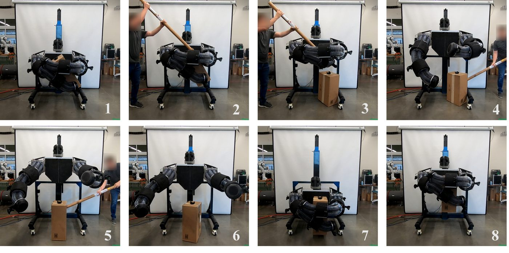
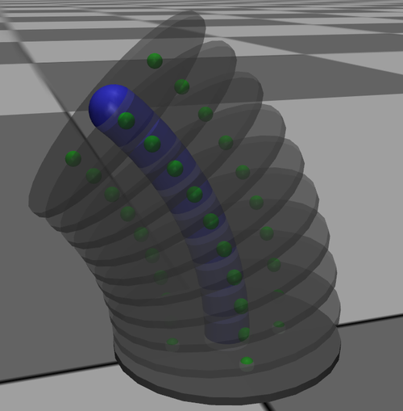

BYU Robotics & Dynamics Lab · Sep 2026 – Present
Whole-Body Manipulation with a Soft Robotic Torso
Teaching a large robot with two soft, pneumatic arms to hug and lift heavy boxes, learned entirely in simulation and transferred to hardware with no fine-tuning.
Curtis C. Johnson, Carlo Alessi, Egidio Falotico, Alejandro Pelaez, Cameron Collyer, Randon Sandall, Marc D. Killpack · Manuscript in preparation

The problem
Whole-body manipulation, using arms and torso rather than just a gripper, lets a robot handle large, heavy, or awkward objects. Soft robots suit this well because their compliance makes contact forgiving, but the same softness makes their kinematics and dynamics hard to simulate and control.
The lab's results so far
The results below are from the original paper by Johnson, Alessi, Falotico, and Killpack, before I joined. I'm contributing to the revised version now in preparation.
- Fast soft-robot simulation: each continuum arm is modeled as a chain of rigid disks joined by universal joints, running up to 350× real time on a single thread in MuJoCo
- Guided RL: shaping the reward with a simple grasping motion primitive was critical. Standard reward shaping failed to produce a stable policy
- Zero-shot sim-to-real: 88% success (22 of 25 hardware trials) lifting five boxes up to ~10 kg, close to the 94% seen in simulation
- Emergent behavior: the learned policy re-grasps after the box is knocked away. It doesn't just replay the primitive


My role In progress
I joined the project in September 2026 for the revised paper. My work so far:
- Developing the evaluation methodology for comparing the RL policy against classical PID and MPC baselines
- Testing and tuning the MPC controller and its cost function in 1, 3, and 6 DOF scenarios
Results from the baseline comparison aren't final yet. I'll add them here when they are.

Code
My simulation and Gym environment work for the robot:
Figures courtesy of the paper's authors, BYU Robotics & Dynamics Lab.